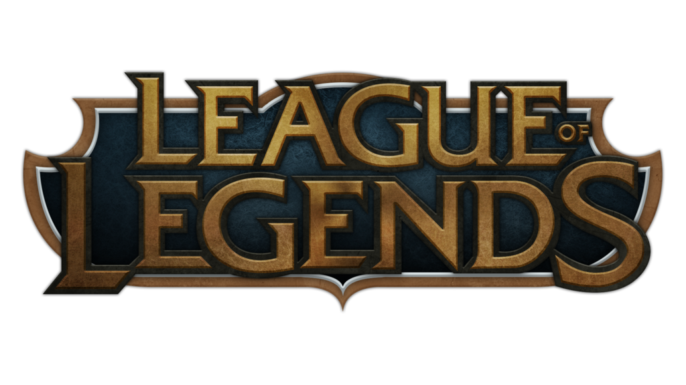
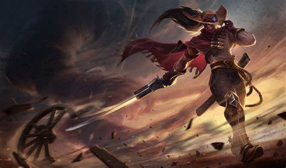

Contos de Runeterra

Yasuo O Imperdoavel
Historia do Campeão
Follow the wind
-
Yasuo é um homem de determinação, um espadachim ágil que empunha o próprio vento para cortar seus inimigos. Este guerreiro outrora orgulhoso foi desonrado por uma falsa acusação e forçado a uma luta desesperada pela sobrevivência. Com o mundo voltado contra ele, ele fará tudo ao seu alcance para trazer os culpados à justiça e restaurar sua honra.